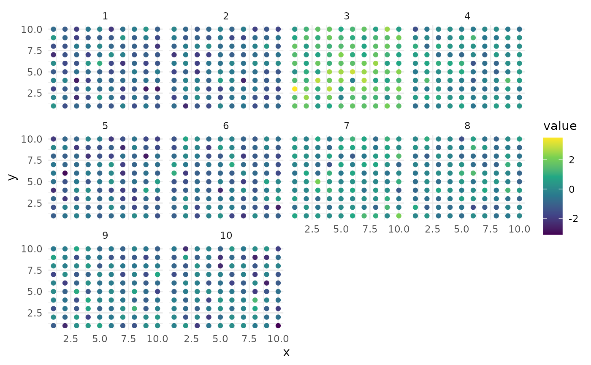

4d-Modeller and INLA/inlabru allow you to use both fixed and random effects in your model with SPDEs allowing you to model continuous random processes in your data. Below we explain briefly each of these processes and how to choose when to use them.
In this document we will use the following data for examples:
library(INLA) # for modeling later## Loading required package: Matrix## Loading required package: sp## This is INLA_24.06.27 built 2024-06-27 02:36:04 UTC.
## - See www.r-inla.org/contact-us for how to get help.
## - List available models/likelihoods/etc with inla.list.models()
## - Use inla.doc(<NAME>) to access documentation
library(MASS) # for true multivariate normal simulation
set.seed(42)
n <- 100 # number of observations
timesteps <- 10 # number of time steps
# Create a basic time and space grid
df <- expand.grid(
x = seq(1, 10, length.out = sqrt(n)),
y = seq(1, 10, length.out = sqrt(n)),
time = 1:timesteps
)
# Create a covariance matrix
cov_matrix <- matrix(0.5, nrow = n, ncol = n) # Example covariance matrix with 0.5 correlation
diag(cov_matrix) <- 1 # Diagonal should be 1
# Generate spatially and temporally correlated noise for each time step
for (i in unique(df$time)) {
noise <- mvrnorm(n = 1, mu = rep(0, n), Sigma = cov_matrix)
df$value[df$time == i] <- noise
}
head(df)## x y time value
## 1 1 1 1 0.2674873
## 2 2 1 1 -1.4520246
## 3 3 1 1 -0.8696036
## 4 4 1 1 -0.7646515
## 5 5 1 1 -1.1159363
## 6 6 1 1 -1.2763059
library(ggplot2)
ggplot(df, aes(x = x, y = y, color = value)) +
geom_point() +
facet_wrap(~time) +
scale_color_viridis_c() +
theme_minimal()
Fixed Effects
A fixed effect in a bayesian model is an effect whose value is fixed in a location but has a probability distribution associated with it’s uncertainty. A fixed effect represents a parameter or coefficient in a model that is assumed to have a fixed, constant value across different observations/locations. In a Bayesian model, a fixed effect is a special case of a random effect where we assume the effect has zero variance.
why would you choose a fixed effect?
You would choose to model an effect as a fixed effect if you believe the effect will always have the same outcome no matter the context of that the observation is taken. For example, a unit of rain should fill a reservoir by that an equivalent unit no matter the conditions given constant climatic conditions with non-porous soil.
example of a fixed effect in r-inla/inlabru
A fixed effect is represented in the fit equation as the variable
name. In the simulated data example, there are three columns
x, y, and time. You can see below
how these are written into the formula that is then passed to inla.
formula <- value ~ 1 + x + y + time
result <- inla(formula, data = df, family = "gaussian")
summary(result)## Time used:
## Pre = 0.376, Running = 0.186, Post = 0.019, Total = 0.582
## Fixed effects:
## mean sd 0.025quant 0.5quant 0.975quant mode kld
## (Intercept) -0.172 0.108 -0.385 -0.172 0.041 -0.172 0
## x -0.007 0.011 -0.029 -0.007 0.014 -0.007 0
## y -0.008 0.011 -0.029 -0.008 0.013 -0.008 0
## time -0.013 0.011 -0.034 -0.013 0.008 -0.013 0
##
## Model hyperparameters:
## mean sd 0.025quant 0.5quant
## Precision for the Gaussian observations 1.02 0.046 0.934 1.02
## 0.975quant mode
## Precision for the Gaussian observations 1.11 1.02
##
## Marginal log-Likelihood: -1445.67
## is computed
## Posterior summaries for the linear predictor and the fitted values are computed
## (Posterior marginals needs also 'control.compute=list(return.marginals.predictor=TRUE)')Random Effects
A random effect in a bayesian model has an effect whose value is drawn from a probability distribution and has associated uncertainty drawn from it’s own distribution. There are two types of random effects that can be modeled in inla, random effects of unobserved processes and random effects constrained by observed processes.
Random Effects of Unobserved Processes
Unobserved processes are processes that may be spatially or temporally distributed that do not have data or a theoretical description as to what they might be. Instead, it is considered variance found within the data that is not representative of randomness and instead some kind of unobserved process.
For example, patients being infected by COVID-19 were impacted by social and demographic factors that helped to control infection rates link. But what if in addition to social and demographic factors, there was an unobserved migration of people into a neighborhood thereby increasing the total number of potential people who could be infected? This would create unobserved variance in the data set (assuming we do not have neighborhood population counts).
Below we show a model that defines a formula where the f
subroutine represents the unobserved variance occuring through time
while x and y are fixed effects.gi
# Define a formula for the model
# Load the INLA library
# Define the formula for the INLA model
formula <- value ~ 1 + x + y + f(time, model = "rw1")
# Fit the INLA model
result <- inla(formula, data = df, family = "gaussian")
# Print the summary of the INLA model
summary(result)## Time used:
## Pre = 0.231, Running = 0.21, Post = 0.0154, Total = 0.456
## Fixed effects:
## mean sd 0.025quant 0.5quant 0.975quant mode kld
## (Intercept) -0.243 0.065 -0.370 -0.243 -0.116 -0.243 0
## x -0.007 0.008 -0.023 -0.007 0.008 -0.007 0
## y -0.008 0.008 -0.023 -0.008 0.007 -0.008 0
##
## Random effects:
## Name Model
## time RW1 model
##
## Model hyperparameters:
## mean sd 0.025quant 0.5quant
## Precision for the Gaussian observations 2.00 0.090 1.826 2.00
## Precision for time 1.25 0.551 0.466 1.15
## 0.975quant mode
## Precision for the Gaussian observations 2.18 1.994
## Precision for time 2.59 0.965
##
## Marginal log-Likelihood: -1136.98
## is computed
## Posterior summaries for the linear predictor and the fitted values are computed
## (Posterior marginals needs also 'control.compute=list(return.marginals.predictor=TRUE)')Random Effects Constrained by Observed Processes
Observed data can be used to constrain effects such that inla/inlabru can be used to do data driven inversion, i.e., estimating processes that cannot be observed directly. For example,
## Loading required package: fmesher##
## Attaching package: 'inlabru'## The following object is masked from 'package:MASS':
##
## shrimp
# Fit a simple model
fit <- bru(value ~ 1 + observed(x + y, model = "linear"), data = df)
# Print the model summary
print(summary(fit))## inlabru version: 2.11.1
## INLA version: 24.06.27
## Components:
## observed: main = linear(x + y), group = exchangeable(1L), replicate = iid(1L)
## Intercept: main = linear(1), group = exchangeable(1L), replicate = iid(1L)
## Likelihoods:
## Family: 'gaussian'
## Data class: 'data.frame'
## Predictor: value ~ .
## Time used:
## Pre = 0.233, Running = 0.194, Post = 0.0417, Total = 0.469
## Fixed effects:
## mean sd 0.025quant 0.5quant 0.975quant mode kld
## observed -0.008 0.008 -0.023 -0.008 0.007 -0.008 0
## Intercept -0.243 0.090 -0.420 -0.243 -0.066 -0.243 0
##
## Model hyperparameters:
## mean sd 0.025quant 0.5quant
## Precision for the Gaussian observations 1.02 0.046 0.935 1.02
## 0.975quant mode
## Precision for the Gaussian observations 1.11 1.02
##
## Deviance Information Criterion (DIC) ...............: 2821.65
## Deviance Information Criterion (DIC, saturated) ....: 1005.41
## Effective number of parameters .....................: 2.99
##
## Watanabe-Akaike information criterion (WAIC) ...: 2821.89
## Effective number of parameters .................: 3.22
##
## Marginal log-Likelihood: -1435.14
## is computed
## Posterior summaries for the linear predictor and the fitted values are computed
## (Posterior marginals needs also 'control.compute=list(return.marginals.predictor=TRUE)')